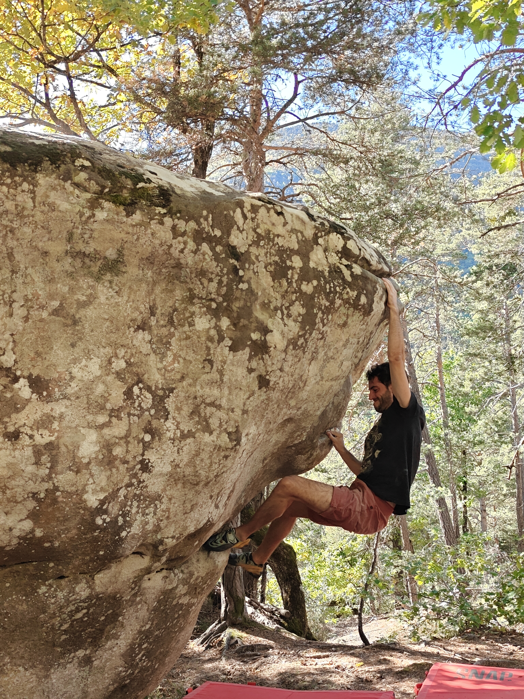
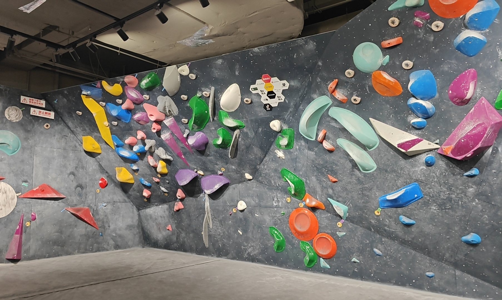
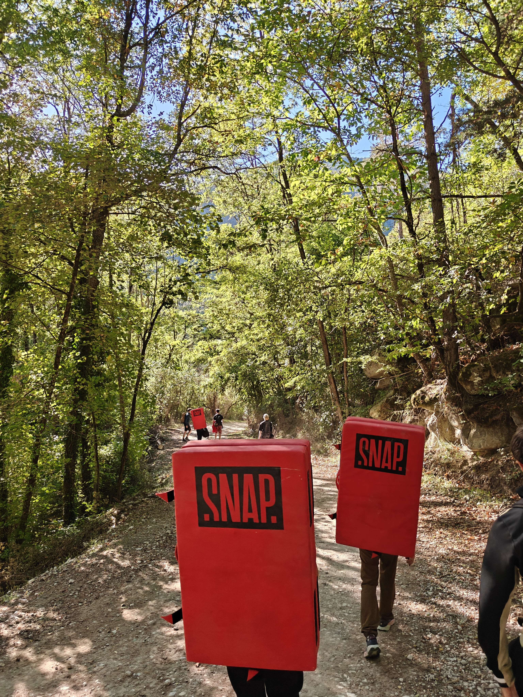
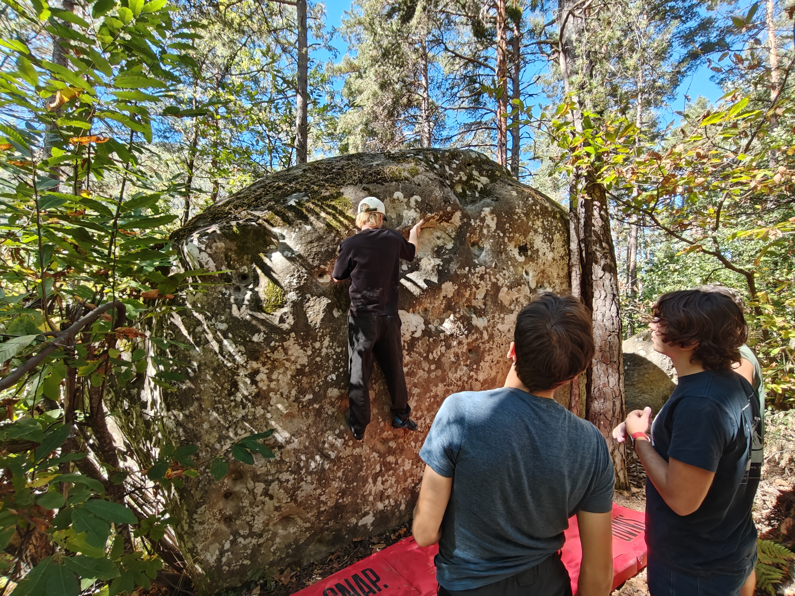

It was around the spring of 2025, in Stockholm, Sweden, when my classmate invited me to go climbing, and that was my first time doing this sport.
In fact, I had heard of climbing at the gym a few months earlier, but back then I thought climbing meant scaling very high places and so was rather dangerous; I also thought climbing was a rich person's sport, like cave diving or surfing, and not quite suited to my social class. When I heard people talk about climbing then, I envied them, but I didn't have the courage to plan to go. But after my first climb I quickly fell in love with the sport.
Indoor Bouldering
To be precise, climbing is a big family of sports, which may be divided into lead, top-rope, bouldering, speed and so on, and can also be divided by venue into indoor and outdoor. What I take part in is called indoor bouldering. Let me first introduce indoor bouldering. It goes like this: the boulderer puts on climbing shoes and goes to an indoor bouldering gym.

An indoor bouldering gym is usually around 5 meters high, with soft mats below for fall protection, and a wooden wall built from a timber frame. Many plastic blocks are fixed to this wooden wall with nails and screws; we call these plastic blocks holds, and they are what you grab and step on when bouldering. Holds come in different colors, used to mark routes. When bouldering you first choose a route, which means that during this attempt you may touch only the wall and the holds of the single color corresponding to this route, not holds of other colors. Every route is marked with a start and a finish. To climb the current route you set off from the start, and use the wall and the holds of that route to climb all the way up; if you can stably touch the finish hold with both hands, it means you have completed the current route.
Routes differ in difficulty from one another; a harder route means fewer holds, or trickier hold shapes or arrangements. These routes are designed by the gym's route setters (somewhat like level design in games), who strip the holds off old routes and install them again in new places to form new routes. The holds of a bouldering gym are reused, because plastic is hardly worn down by hands and feet, and as long as it is washed clean it can be used to design new routes.
Oh, have I said too much? That's because I really love the sport of bouldering, for the following reasons. First, bouldering demands abilities from a person in every direction: it tests strength, agility and planning (my super brain tells me it's time to use super strength), and people of different heights each have their advantages and disadvantages. Second, the difficulty of bouldering varies with the route you choose, so you can always find a problem suited to your level to challenge your limits. Last, bouldering truly does need experience and intelligence for planning. We can regard a route as an optimization problem: our goal is to move from the start to the finish, and we should hope to minimize energy expenditure, while each oddly shaped hold along the way is like a constraint, because they usually provide a particular friction or support only around a particular direction. I really enjoy the process of feeling out a route and solving it.
Outdoor Bouldering
Outdoor bouldering is also a very interesting sport, and in fact outdoor bouldering may make it easier for everyone to understand why this sport is called bouldering. Bouldering originated from the mountaineering training of French climbers in Fontainebleau, which has large sandstone boulders scattered over sandy ground. In the seasons when they could not go climb in the Alps, early mountaineers practiced their climbing skills on these low but technically demanding rocks. Outdoor bouldering is basically choosing a boulder about 4 meters high, setting a starting point, and climbing specific areas of the rock's surface until you finally stand on top of the rock. In practice it looks like a person hugging a huge rock and moving upward. Compared with indoor bouldering, outdoor bouldering has no color-coded holds; the cracks and protrusions of the rock within a certain area can all be used, so it tests route-reading ability more. Routes for outdoor bouldering can be set on the spot by yourself, or you can check rocks and routes marked by enthusiasts on outdoor bouldering websites, and these marked routes also get difficulty ratings from everyone, making it easier for later climbers to choose routes. In addition, the style of outdoor routes is not very similar to indoor ones: the protrusions and dents on outdoor rock are usually smaller than indoor holds, which tests the grip of the fingertips more. Since outdoor bouldering takes place on boulders in the wild, you usually need to carry a crash pad (similar to a foldable mattress) to the bouldering spot and lay it beneath the natural boulder. Below are some photos I took while bouldering outdoors.


Bouldering Competition
This is a bouldering competition held at a climbing gym that I watched live. There were six routes in total, three for men and three for women, and the three routes in each category respectively tested the athletes' strength, balance and dynamic ability. This video is from the strength route. Generally speaking, a strength route means a larger incline of the wooden wall and huge holds that require athletes to coordinate hands and feet to exert pressure in order to get the friction they need. This climbing gym is part of a chain with lots of experience hosting competitions; normally it is a gym for enthusiasts to play in, but during the competition there were lights, photography, a live DJ and beer on offer, and I enjoyed the competition that day very much.
I have been climbing for a year and a half now, so I can say I'm a small-time expert. When I had a layover in Shanghai I went to Banana Climbing. Being from Dalian, after coming back I also visited two local climbing gyms and chatted with the owners about the development of climbing in Dalian. Unfortunately, I recently got a TFCC injury in my right wrist and can't exert full force, so I have to retire into rest and recovery for about 3 months. What is certain is that once I'm healed I will keep climbing.